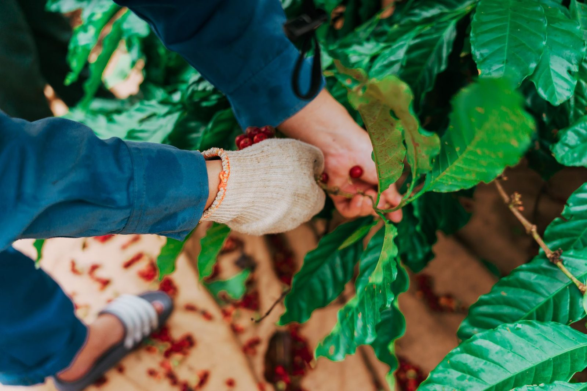
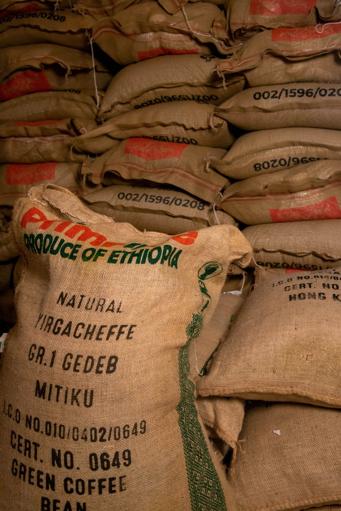
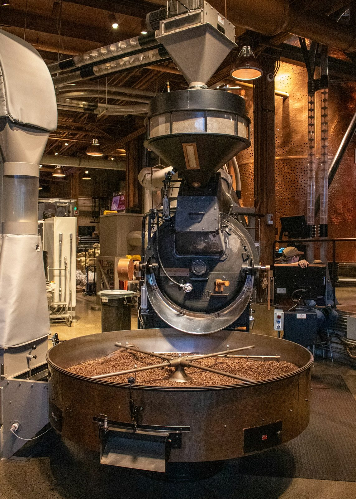
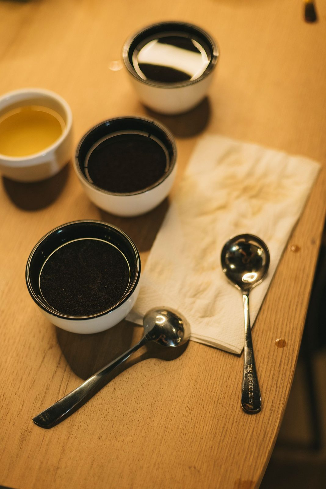
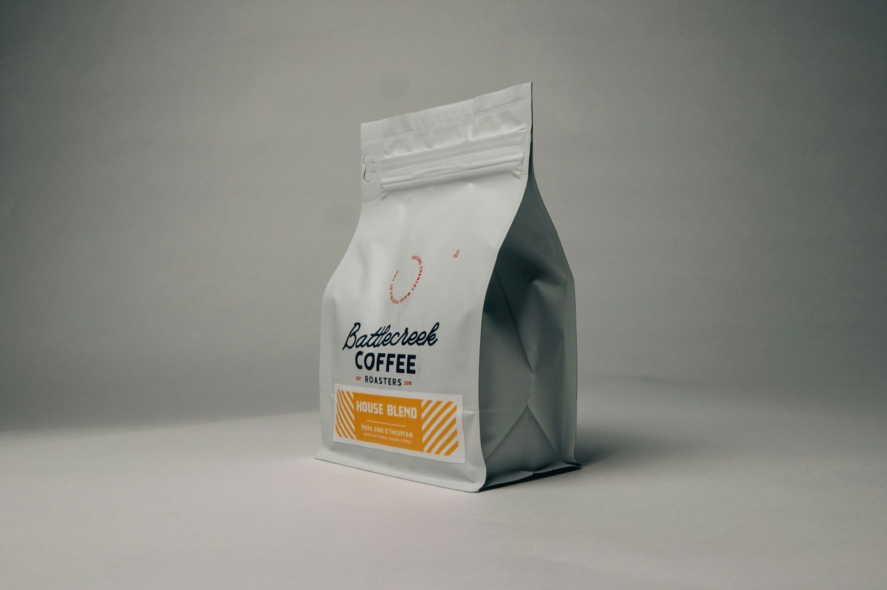

Medellín roastery
Single-origin Colombia
Roast dates on every bag
Vortice Single-origin Colombian coffee, pulled into its perfect roast.
Roasted in Medellín with in-house profile development, roast-date discipline, and a monthly subscription club built around Colombia's current crop.
Filter
Espresso
Mixed

Origin intake
Traceability tableCurrent single-origin lots
A rotating crop table, tuned before it becomes a roast.
These release-style lots show how Vórtice buys and presents Colombian coffees: region, altitude, process, roast target, and a clear brew lane.
Antioquia
Ciudad Bolívar
- Altitude
- 1,750-1,950 masl
- Variety
- Caturra / Castillo
- Process
- Washed or honey
Panela, red apple, cacao nib, citrus lift.
Next roast window
Huila
Palestina
- Altitude
- 1,650-1,900 masl
- Variety
- Pink Bourbon / Caturra
- Process
- Washed
Orange blossom, stone fruit, caramel, bright acidity.
Fresh crop rotation
Nariño
High ridge lot
- Altitude
- 1,950-2,150 masl
- Variety
- Colombia / Tabi
- Process
- Washed
Lime, florals, honey, refined sweetness.
Next roast window
Tolima
Seasonal release
- Altitude
- 1,700-2,000 masl
- Variety
- Castillo / Bourbon
- Process
- Natural or extended fermentation
Berries, panela, cocoa, tropical fruit.
Fresh crop rotation
In-house profile development
Enough heat to build sweetness. Enough restraint to keep the origin visible.
Profiles are adjusted by density, moisture, and cup result, not by a house roast formula. Every release is cupped before it becomes a subscription coffee.
- 01Green analysis
Density, moisture, screen, and sample tray condition.
- 02Sample roast
Light-medium profile for clarity before production.
- 03Production curve
Charge temp, airflow, rate of rise, first crack.
- 04Cupping table
Sweetness, acidity, body, finish, and release decision.

Cupping proof table
"If the cup loses the farm, the roast curve changes."
Aroma
Acidity
Body
Sweetness
Finish
Subscription club
Your monthly Colombian rotation, roasted in Medellín.
Choose a lane, cadence, and roast preference. Each bag arrives with region, process, tasting notes, roast date, and brew guidance.
Filter / Espresso / Mixed
Monthly or twice monthly
Bright / balanced / developed
Whole bean or grind preference
Filtro Claro
For V60, Chemex, AeroPress. One bag monthly, bright, floral, fruit-forward.
Clarity
Body
Sweetness
Start filter club
Espresso Base
For espresso and milk drinks. One to two bags monthly with structured sweetness, cacao, and caramel.
Clarity
Body
Sweetness
Start espresso club
Rotación Vórtice
Mixed discovery with rotating regions and processes, built for curious drinkers.
Clarity
Body
Sweetness
Build my rotation

Visit / wholesale
Roasted in Medellín. Visits, cuppings, and wholesale conversations by inquiry.
For cafes: rotating Colombian single-origin menu, roast-date discipline, brew guidance, and cupping support.